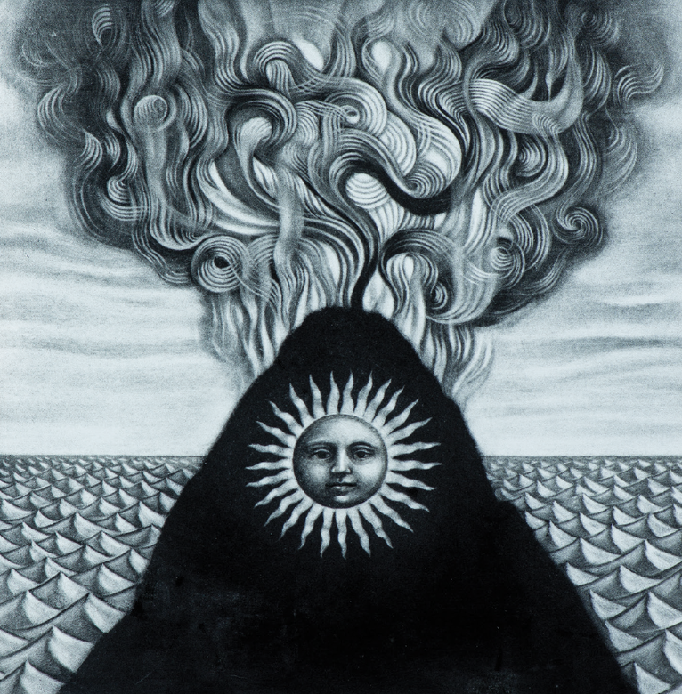

Gojira, banda de metal originaria de Francia y una de las más aclamadas dentro del género, publica su nuevo álbum de estudio Magma, compuesto, producido y mezclado por el propio grupo en su estudio de Ridgewood (Queens). Gojira ha presentado este nuevo trabajo con dos canciones Stranded y Silvera, donde de nuevo se aprecia la épica a la que la banda nos tiene acostumbrados.
- Magma - A growing sickness in the heart Defective, lack of control The cure is somewhere in the silence But I’m crushed by the noise inside Don’t lock the door on me You’d kill me, face down, dead Another part of me falls for you Another day in the dark Stranded in the night, stranded in the cold Don’t lock the door on me You’d kill me, face down, dead Another point of view gone to waste Please hear me out! You kill me, face down, dead Another day in the dark Don’t lock the door on me You’d kill me, face down, dead Another point of view gone to waste Please hear me out! You kill me, face down, dead Another day in the dark Leave the moment alone